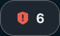
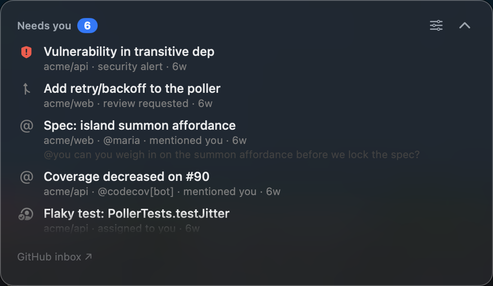
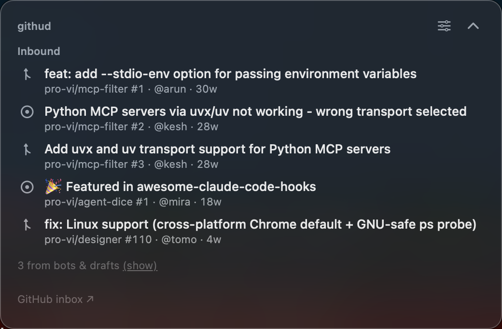
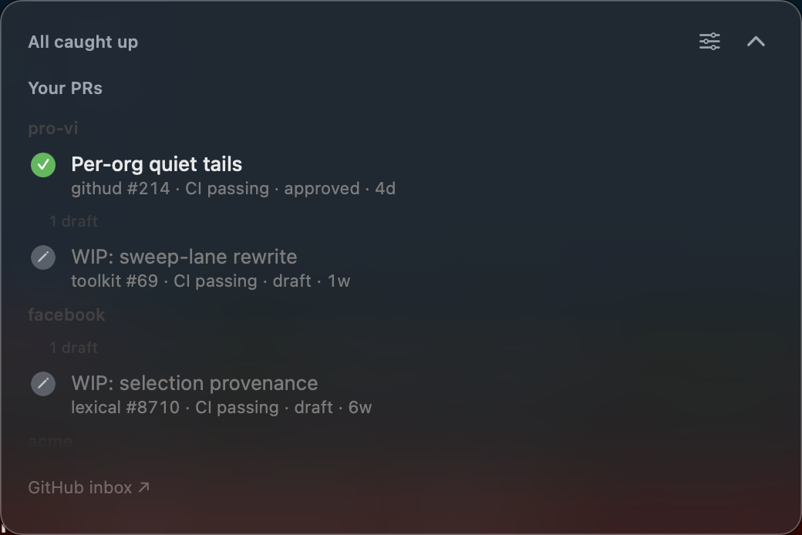

A calm macOS menu-bar HUD that answers one question: does GitHub need me right now?
A repo you starred once. A bot commenting on CI. A thread you already replied to. By Wednesday there are fifty unread and you have stopped looking — which is when the one that mattered arrives.
githud does not mirror that inbox. It asks a smaller question, all day, in the corner of your eye. Most of the time the answer is no, and it looks like this:

One small pill under the menu bar. Click it and you get the whole picture — on a real account, about fifty notifications down to a handful.
$ curl -fsSL https://raw.githubusercontent.com/pro-vi/githud/main/docs/install | sh
Needs a Swift toolchain, which
xcode-select --install provides. Full Xcode is not used. Takes a minute or two.
Why build instead of download? Because it is the only route that just works. macOS attaches the quarantine flag when a file is downloaded, so an app you compiled yourself carries no flag and opens normally. A downloaded build of an unsigned app is blocked by Gatekeeper — and since macOS 15 the old right-click → Open shortcut no longer exists, so you have to walk through System Settings to allow it. Compiling skips all of that.
Grab the universal .zip from
Releases. It is not signed —
there is no Apple Developer ID on this project yet — so Gatekeeper will stop it once.
To let it through:
xattr -d com.apple.quarantine /Applications/githud.appOn first run githud shows a Connect GitHub card. Paste
a classic personal access token with the notifications scope — add
repo too, so it can tell a human reply from a bot on your private PRs. The
token goes into your login Keychain and nowhere else.
Classic is not a preference, it is a wall: GitHub's Notifications API rejects fine-grained and App tokens whatever scopes you give them. githud checks the shape of what you paste and refuses the wrong kind before storing anything, rather than leaving you with a silently empty inbox.

Review requests, mentions, assignments, human replies on your own PRs. Bots, CI and threads where you already had the last word are suppressed. It also runs a standing search for reviews you owe — because a review request stays owed after you read the notification, and a read notification is gone from the inbox forever.
Everything someone else opened on repos you own, longest wait first. A triage queue, so the contributor who has been waiting since December leads. Bot and draft items hold back to a quiet count.


Every open PR rolled up to one state — blocked, ready, waiting or draft. It never invents a state it cannot back: no checks is not passing, and “checking…” is not ready. Across several orgs the lane wears titles, and folding one keeps its count visible.
It never marks read, replies, merges or closes. It opens things on github.com and you decide. Marking read on your behalf can bury something you needed.
If a source did not confirm this tick, the pill says “clear so far”, not “clear”. A checkmark means every lane came back clean — never that a request failed quietly.
A non-activating panel. It will not steal the keyboard from what you are doing, and it shows over full-screen Spaces.
Polling is conditional on GitHub's own interval, so an unchanged inbox costs a
304 and nothing else. Around 0% CPU between polls.